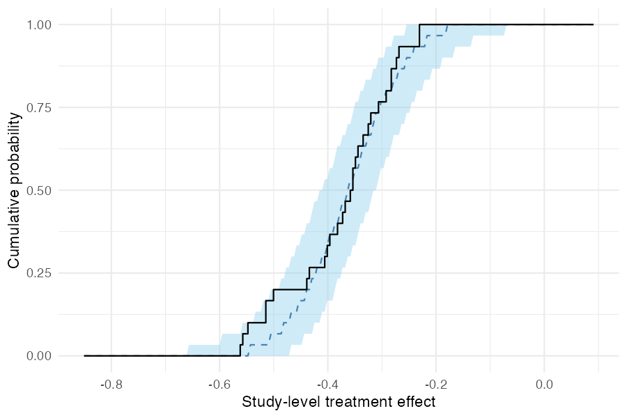
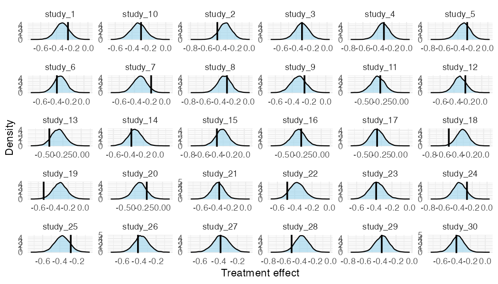

metadid is an R package for Bayesian meta-analysis that synthesises treatment effects across studies with different designs: difference-in-differences (DiD), randomised controlled trials (RCT), and pre-post studies. It uses a hierarchical Stan model that accounts for design-specific information and heterogeneity across studies, with optional baseline normalisation to place outcomes on a common fractional scale.
Model assumptions
metadid assumes that all studies arise from a common latent difference-in-differences (DiD) structure. Different study designs correspond to observing different parts of this latent structure.
DiD studies are the only design in this framework that directly identify the treatment effect. Meta-analyses that do not include DiD studies are not identified from the data and depend entirely on modelling assumptions. We do not recommend using this approach in the absence of DiD evidence.
Latent DiD model
For study , outcomes in the control group satisfy
and outcomes in the treatment group satisfy
Here:
-
: baseline mean in the control group
-
: time trend shared across groups
-
: baseline difference between treatment and control
-
: study-specific treatment effect
-
, : pre/post correlations
- , : marginal standard deviations
The key identifying assumption is that, in the absence of treatment, the treatment group would have followed the same time trend as the control group.
Study designs as partial observations
Different study designs correspond to observing subsets of this latent structure:
-
DiD / RCT: both groups and both time points observed
-
Pre-post: treatment group only
- Post-only / change-score: partial observations of levels or differences
Inference for incomplete designs relies on the shared latent structure across studies.
Hierarchical treatment effects
Study-specific treatment effects are modelled hierarchically, for example as
where is the overall treatment effect and captures between-study heterogeneity.
For robustness to outlying study effects, the model can alternatively use a Student-t distribution,
where controls the tail-heaviness.
Installation
metadid depends on cmdstanr and instantiate, which compile Stan models at package install time. Install them first if you haven’t already:
install.packages("cmdstanr", repos = c("https://mc-stan.org/r-packages/", getOption("repos")))
cmdstanr::install_cmdstan()
install.packages("instantiate")Then install metadid from GitHub:
# install.packages("pak")
pak::pak("ben18785/metadid")Quick start
1. Simulate studies
simulate_meta_did() generates individual-level pre/post data for both arms across a set of studies from a known hierarchical model. as_summary_did() then aggregates this to the four-cell summary statistics (pre/post × control/treatment) that represent what is typically reported in a published study.
library(metadid)
#>
#> Attaching package: 'metadid'
#> The following object is masked from 'package:base':
#>
#> gamma
sim <- simulate_meta_did(
n_studies = 20,
true_effect = -0.15,
sigma_effect = 0.03,
baseline_mean = 0.45,
rho = 0.5,
seed = 42
)
studies <- as_summary_did(sim)
head(studies)
#> # A tibble: 6 × 13
#> study_id design n_control n_treatment mean_pre_control mean_post_control
#> <chr> <chr> <int> <int> <dbl> <dbl>
#> 1 study_1 did 100 100 0.450 0.418
#> 2 study_10 did 100 100 0.448 0.435
#> 3 study_11 did 100 100 0.420 0.409
#> 4 study_12 did 100 100 0.475 0.444
#> 5 study_13 did 100 100 0.447 0.435
#> 6 study_14 did 100 100 0.461 0.416
#> # ℹ 7 more variables: sd_pre_control <dbl>, sd_post_control <dbl>,
#> # mean_pre_treatment <dbl>, mean_post_treatment <dbl>,
#> # sd_pre_treatment <dbl>, sd_post_treatment <dbl>, rho <dbl>The true population treatment effect is -0.15 on the raw scale, or approximately -0.333 after normalising by the baseline mean of 0.45.
2. Fit the model via optimisation
meta_did() fits a hierarchical Bayesian model. Setting method = "optimize" finds the maximum a posteriori (MAP) estimate via L-BFGS — much faster than full MCMC and useful for quick iteration.
3. Inspect study-level estimates
summary() returns a data frame of population- and study-level parameters. With MAP optimisation, only point estimates are available (sd, lo, and hi are NA); use method = "sample" for full posterior uncertainty.
summary(fit)4. Fit the model via MCMC
For full posterior uncertainty, use the default method = "sample":
fit_mcmc <- meta_did(
summary_data = studies,
seed = 42,
iter_warmup = 200,
iter_sampling = 400
)
print(fit_mcmc)#> Bayesian meta-analysis (metadid)
#> Studies: DiD = 20 | RCT = 0 | Pre-Post = 0 | DiD (change only) = 0
#> Population treatment effect: -0.307 90% CI [-0.341, -0.273]summary() now includes posterior standard deviations and credible intervals:
summary(fit_mcmc)#> parameter mean sd lo hi
#> 1 treatment_effect_mean -0.30734301 0.02053925 -0.34109011 -0.2731060
#> 2 treatment_effect_sd 0.08387904 0.01614552 0.06170731 0.1124974
#> 3 treatment_effect_did_summary -0.23482038 0.02605055 -0.27537815 -0.1916570
#> 4 treatment_effect_did_summary -0.35087501 0.02539211 -0.39315193 -0.3085825
#> 5 treatment_effect_did_summary -0.22512112 0.02910410 -0.27397179 -0.1791810
#> ...5. Posterior predictive checks
pp_check_cdf(type = "summary") compares the empirical CDF of observed study-level treatment effects (step function) to the posterior predictive CDF (ribbon and dashed median). If the model is well-calibrated, the observed ECDF should track the predictive band.
pp_check_cdf(fit_mcmc, type = "summary")
For a more granular per-study view, pp_check_effects() shows each study’s observed naive effect against its posterior predictive density:
pp_check_effects(fit_mcmc)